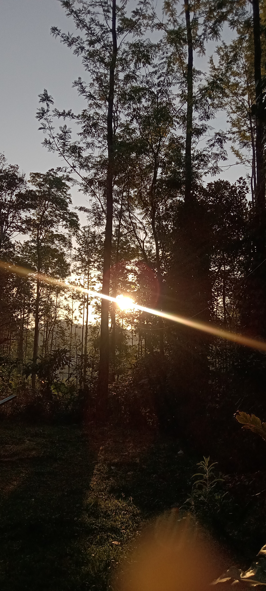

rees are Nature’s bounty. Trees are of many different kinds. There are flowering trees, which bear blossoms, and non-flowering ones, which do not bloom into flowers. There are evergreen trees, which stay green through the year. There are also deciduous ones which may shed their leaves during a particular season annually making their branches turn bare. Trees make landscapes beautiful. Trees are invaluable to man and terrestrial life forms. Trees maintain ecological balance and equilibrium. Trees must be protected. The felling of trees must be prevented. Tree plantation activities must be encouraged to make our environment green, beautiful and healthy.
